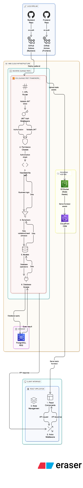

Recruitment Management System (RMS)¶
Executive Summary¶
Recruitment Management System (RMS): a cloud-hosted web app to streamline job posting, applicant tracking, status updates, and role-based access. Built with React, Django REST Framework, and PostgreSQL (RDS), deployed via CI/CD on AWS, with secure JWT authentication and a scalable backend—foundation for a future AI ATS.
Purpose and Scope¶
Purpose¶
The purpose of this project is to design and implement a centralized recruitment management system that digitizes and automates essential HR functions like job management, application tracking, and department-wise reviews.
Scope¶
The system currently supports:
- Secure login and registration for Administrator ,Recruiter and Technical Evaluator
- Job posting and management
- application submission
- Recruitment status updates and interview sheduling
- Role-based permissions for data access and actions
- CI/CD deployment through GitHub Actions with AWS hosting
System Architecture Overview¶
The system follows a modular, layered architecture deployed on AWS Cloud Infrastructure.
1. CI/CD Pipeline¶
- GitHub Actions handle automated build and deployment
- The frontend (React) and backend (Django REST Framework) are hosted separately, ensuring independent scalability
- Backend is deployed to AWS EC2, and frontend assets are served from AWS S3 via CloudFront for global availability
2. Backend Layer (Django REST Framework on EC2)¶
- Handles all business logic and RESTful API endpoints
- Uses JWT-based middleware for authentication and authorization
- Implements modular structure with Views, Serializers, and Models
- Interacts with PostgreSQL RDS for secure data storage and querying
3. Frontend Layer (React + Axios)¶
- Developed using React.js for a responsive, interactive UI
- Axios middleware manages API communication
- State management ensures smooth user experience across modules
4. Database Layer (PostgreSQL RDS)¶
- Stores structured data for users, roles, jobs, applicants, and applications
- Simple role-based access control with a dedicated ROLES table
Architecture Diagram¶

Database Architecture (ERD Overview)¶
The ER diagram defines clear relationships between the system's entities:
- USERS – System users (Administrator, Recruiter, Technical Evaluator)
- ROLES – Simple role definitions (Administrator, Recruiter, Technical Evaluator)
- JOBS – Job listings with complete details including salary range, requirements, and benefits
- APPLICATIONS – Contains all applicant information and application data
- Stores resume as binary data in PostgreSQL
- Includes professional details, contact info, and address
- Tracks application status and assignment
- APPLICATION_STATUSES – Defines recruitment stages (HR Screening, Technical Screening, Interviews, etc.)
- APPLICATION_ASSIGNED_USER_STATUSES – Tracks status changes and user assignments
Note: For complete technical specifications, API endpoints, and implementation details, see the Technical Documentation page.
Database Entity Relationship Diagram¶
erDiagram
%% ===== CORE RELATIONSHIPS =====
USERS }o--|| ROLES : "has role"
USERS ||--o{ APPLICATION_ASSIGNED_USER_STATUSES : "reviews / updates"
USERS ||--o{ JOBS : "posts"
USERS ||--o{ APPLICATIONS : "assigned to"
JOBS ||--o{ APPLICATIONS : "receives"
APPLICATIONS ||--o{ APPLICATION_ASSIGNED_USER_STATUSES : "tracked by"
APPLICATION_ASSIGNED_USER_STATUSES }o--|| APPLICATION_STATUSES : "records status"
%% ===== CORE TABLES =====
USERS {
int id PK "Primary Key, auto-increment"
string username UK "Unique, NOT NULL, max_length=150"
string email UK "Unique, NOT NULL, max_length=254"
string password "NOT NULL (hashed)"
string first_name "NOT NULL, max_length=150"
string last_name "NOT NULL, max_length=150"
int role_id FK "References ROLES(id)"
boolean is_active "Default=True"
datetime last_login "Nullable"
datetime created_at "NOT NULL, default=NOW()"
datetime updated_at "NOT NULL, auto-updated"
datetime deleted_at "Nullable, for soft delete"
}
ROLES {
int id PK "Primary Key, auto-increment"
string name UK "Unique, NOT NULL, max_length=50"
text description "Optional"
}
%% ===== APPLICATION TABLES =====
JOBS {
int id PK "Primary Key, auto-increment"
string title "NOT NULL, max_length=255"
text description "NOT NULL"
string employment_type "NOT NULL, choices: Full-time, Part-time, Contract, Internship"
string location "NOT NULL, max_length=255"
string department "NOT NULL, max_length=100"
string experience_level "NOT NULL, choices: Entry, Mid, Senior, Lead"
decimal salary_min "Optional, max_digits=10, decimal_places=2"
decimal salary_max "Optional, max_digits=10, decimal_places=2"
text requirements "NOT NULL"
text benefits "Optional"
int posted_by_user_id FK "References USERS(id) ON DELETE SET NULL"
datetime posted_date "NOT NULL, default=NOW()"
datetime closing_date "Optional"
string status "Default='Open', choices: Open, Paused, Closed"
datetime created_at "NOT NULL, default=NOW()"
datetime updated_at "NOT NULL, auto-updated"
datetime deleted_at "Nullable, for soft delete"
}
APPLICATIONS {
int id PK "Primary Key, auto-increment"
int job_id FK "References JOBS(id) ON DELETE CASCADE"
string first_name "NOT NULL, max_length=100"
string last_name "NOT NULL, max_length=100"
string email "NOT NULL, indexed"
string phone "NOT NULL, max_length=20"
binary resume "NOT NULL, stored in PostgreSQL"
string resume_content_type "NOT NULL, max_length=100"
string current_location "Optional, max_length=255"
string total_experience "Optional, max_length=50"
string relevant_experience "Optional, max_length=50"
string current_ctc "Optional, max_length=50"
string expected_ctc "Optional, max_length=50"
string notice_period "Optional, max_length=50"
string current_job_title "Optional, max_length=255"
text skill_set "Optional"
url linkedin "Optional"
url github "Optional"
string street "Optional, max_length=255"
string city "Optional, max_length=100"
string state "Optional, max_length=100"
string zip_code "Optional, max_length=20"
string status "Default='HR Screening', choices: HR Screening, Technical Screening, Interview 1, Interview 2, HR Interview, Offer Sent, Joined, Rejected"
int assigned_user_id FK "References USERS(id) ON DELETE SET NULL, Optional"
text notes "Optional"
datetime applied_date "NOT NULL, default=NOW()"
datetime created_at "NOT NULL, default=NOW()"
datetime updated_at "NOT NULL, auto-updated"
datetime deleted_at "Nullable, for soft delete"
}
APPLICATION_STATUSES {
int id PK "Primary Key, auto-increment"
string name UK "Unique, NOT NULL, max_length=100"
text description "Optional"
int order_sequence "NOT NULL"
datetime created_at "NOT NULL, default=NOW()"
datetime updated_at "NOT NULL, auto-updated"
datetime deleted_at "Nullable, for soft delete"
}
APPLICATION_ASSIGNED_USER_STATUSES {
int id PK "Primary Key, auto-increment"
int application_id FK "References APPLICATIONS(id) ON DELETE CASCADE"
int status_id FK "References APPLICATION_STATUSES(id) ON DELETE CASCADE"
int assigned_user_id FK "References USERS(id) ON DELETE SET NULL"
text notes "Optional (review feedback or comments)"
datetime status_date "NOT NULL, default=NOW()"
datetime created_at "NOT NULL, default=NOW()"
datetime updated_at "NOT NULL, auto-updated"
datetime deleted_at "Nullable, for soft delete"
}Database Indexing Strategy¶
Essential indexes for better performance (Django creates most of these automatically):
USERS Table¶
email- For login and user searchusername- For loginrole_id- Foreign key (auto-indexed by Django)
JOBS Table¶
status- For filtering open/closed jobsdepartment- For department filteringposted_by_user_id- Foreign key (auto-indexed by Django)
APPLICATIONS Table¶
email- For searching applicants and preventing duplicatesstatus- For filtering by application statusjob_id- Foreign key (auto-indexed by Django)assigned_user_id- Foreign key (auto-indexed by Django)
Note: Django automatically creates indexes for Primary Keys, Foreign Keys, and fields with
unique=True. You only need to manually add indexes for frequently filtered fields likestatus,department, and
Goals¶
Build a working MVP for recruitment management. Future plan: add AI agents for ranking candidates, analyzing GitHub/LinkedIn profiles, automated phone calls for repetitive tasks like sheduling interview ,getting notice period other stuff , and smart filtering beyond just resumes.
Functional Modules¶
1. Authentication and Authorization¶
- JWT-based login and sign-up system using Django REST Framework SimpleJWT
- Simple role-based access control with three roles: Administrator, Recruiter, and Technical Evaluator
2. Job Management¶
- Create, edit, and delete job postings
- Assign jobs to departments and specify employment details
3. Applicant Management¶
- Candidate registration and resume upload
- Apply for specific job openings
4. Application Tracking¶
- Department-wise review and comments on applications
- Track status transitions such as Applied, Under Review, Shortlisted, Rejected, or Hired
Technical Requirements¶
| Component | Technology Stack |
|---|---|
| Frontend | React.js, Axios, Tailwind CSS |
| Backend | Django REST Framework (Python), SimpleJWT Auth |
| Database | PostgreSQL (AWS RDS) |
| Hosting | AWS EC2 (Backend), AWS S3 + CloudFront (Frontend) |
| CI/CD | GitHub Actions |
| Authentication | JSON Web Token (JWT) via djangorestframework-simplejwt |
| Version Control | GitHub |
Constraints¶
- Developed and maintained by a single developer; not much can be done
- Focused on building a solid foundation for data management and workflows
- AI-based candidate filtering and predictive analytics are deferred for later integration
Use Cases¶
Use Case 1: Applicant Applies for Job¶
Actor: Job Applicant
Steps:
- Visit website and browse jobs
- Click on a job to see details
- Upload resume (PDF or DOC)
- Fill out application form
- Submit application
- Get confirmation email
Notes:
- No login needed to browse jobs
- No login required
Use Case 2: Admin Adds New User¶
Actor: Admin
Steps:
- Login to admin panel
- Go to user management
- Enter new user's email
- Select their department
- Assign group (Administrator, Recruiter and Technical Evaluator)
- System sends invite email
What happens next:
- New user gets email with setup link
- Link expires in 48 hours
- User clicks link and creates password
- User can now login
Use Case 3: HR Reviews Applications¶
Actor: HR Team Member
Steps:
- Login to dashboard
- See list of applications
- Filter by status or job position
- Click on an application to open it
- Review resume and application form
- Add notes for team
- Update status (shortlist, reject, or interview)
- System emails applicant about status change
Notes:
- Multiple HR members can review same application
- All changes are logged with timestamps
Evaluation Plan and Metrics¶
| Metric | Description |
|---|---|
| Data Accuracy | Ensured by foreign key constraints in PostgreSQL |
| Response Time | Measured for API endpoints |
| Deployment Stability | Tested through automated GitHub Actions runs |
Future Enhancements¶
Phase 1 - Core Features¶
- Email automation for status updates
- Job portal integration (LinkedIn, Indeed, Naukri)
- Analytics dashboard
Phase 2 - Advanced Permission System¶
- Migrate to Django's built-in Groups and Permissions system
- Fine-grained permissions (AUTH_GROUPS, AUTH_PERMISSIONS, AUTH_USER_GROUPS, etc.)
- Custom permission assignments per user
- Content type framework for generic relations (DJANGO_CONTENT_TYPES)
- Group-level permission management (AUTH_GROUP_PERMISSIONS)
- User-specific permission overrides (AUTH_USER_USER_PERMISSIONS)
Phase 3 - AI Features¶
- AI resume parsing and ranking
- AI agents to analyze GitHub, LinkedIn, portfolios
- Automated phone calls for repetitive info (joining date, salary)
- Smart candidate matching beyond keywords
Conclusion¶
The Recruitment Management System (RMS) provides a reliable foundation for automating company internal hiring process. By combining Django REST Framework, React, and AWS, it establishes a scalable and secure system architecture.
This base version focuses on streamlining recruitment workflows and cloud-ready infrastructure—serving as a strong platform for future expansion into a full-featured AI-driven Applicant Tracking System (ATS).